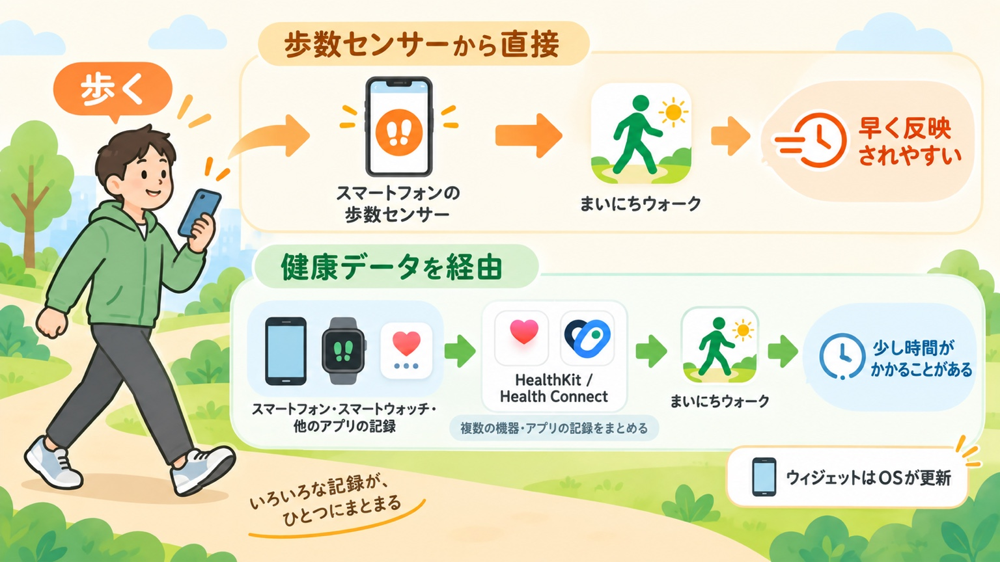

歩数の更新
歩数がすぐ更新されないことがあるのはなぜ？
公開日: 2026年9月22日
「さっき歩いたのに、歩数が増えていない」
「アプリを開き直したら、あとから数字が増えた」
歩数計を使っていると、こんなことがあります。 これは必ずしも、歩数が数えられていないという意味ではありません。 歩数を数える場所と、アプリがその数字を受け取る場所が別になっていることがあるためです。

先に要点
- 歩いた瞬間に、すべての歩数計アプリへ同時に数字が届くわけではありません。
- 端末の歩数センサーから直接読む方法は速く、HealthKitやHealth Connectを経由する方法は反映に時間がかかることがあります。
- どちらが優れているというより、「速く見る」か「複数の機器やアプリの記録をまとめる」かで役割が違います。
歩数はどうやってアプリまで届く？
歩数が画面に表示されるまでには、いくつかの段階があります。
歩く → 端末が歩数を数える → データが保存・整理される → アプリが読み取る → 画面に表示する
端末のセンサーからアプリが直接読めば、比較的すぐに表示できます。 一方、iPhoneのHealthKitやAndroidのHealth Connectのような仕組みを経由する場合は、 歩数がそこへ記録・同期されたあとにアプリが読み取ります。 そのため、歩いてから表示されるまでに少し時間がかかることがあります。
歩数の読み方は、大きく2種類
端末の歩数センサーから直接読む
スマートフォン自身が数えている歩数を、アプリが直接読みます。 今日どれだけ歩いたかをすぐ確認したいときに向いています。
ただし、基本的にはそのスマートフォンが検出した歩数が中心です。 別の時計や端末だけを持って歩いた分まで、その場ですべて取得できるとは限りません。
健康データを経由して読む
iPhoneではHealthKit、AndroidではHealth Connectが、健康や運動に関するデータをまとめる役割を持っています。 この方法なら、対応する時計や他のアプリから保存された歩数も扱えます。
その代わり、データが保存・同期されるまでの時間があるため、 「歩いた直後の数字を見る」ことには向かない場合があります。
つまり、直接読む方法は速さを重視し、健康データを経由する方法は複数の記録をまとめることを重視するという違いがあります。
iPhone版のまいにちウォークではどうしている？
現在のiPhone版には、今日の歩数について「高速モード」と「ヘルスケアモード」があります。
高速モード
高速モードでは、iPhoneの歩数センサーから今日の歩数を直接読み取ります。 ホーム画面を開いているあいだは、歩くたびに数字を更新するため、 HealthKitへの反映を待つより早く今日の歩数を確認できます。
ただし、完全なリアルタイムを保証するものではありません。
ヘルスケアモード
ヘルスケアモードでは、HealthKitに保存された歩数を使います。 Apple WatchなどからHealthKitへ保存された歩数も含められる一方、 歩いてからHealthKitへ記録されるまで少し時間がかかる場合があります。
そのため、iPhoneを持って歩くことが多く、今日の数字を早く見たい場合は高速モード、 Apple Watchなどの歩数も含めたい場合はヘルスケアモードという使い分けができます。
Apple Watchの歩数がすぐ出ないことがあるのはなぜ？
たとえば、iPhoneを机に置いたままApple Watchだけを着けて歩いたとします。 その歩数はiPhone自身の歩数センサーが数えたものではありません。 Apple Watch側の記録がHealthKitへ反映され、そのあとアプリが読み取ります。
そのため、Apple Watchの歩数を含める場合は、iPhoneから直接読む場合より表示まで時間がかかることがあります。 過去の記録については、まいにちウォークでもHealthKitの値を使います。
ウィジェットもアプリと同じ速さで更新される？
ウィジェットは、アプリ本体の画面とは更新の仕組みが違います。 アプリが好きなタイミングで何度でも更新できるわけではなく、iOSが更新タイミングを管理しています。
そのため、アプリを開いたときの歩数とウィジェットの歩数が一時的に違うことがあります。 まいにちウォークのウィジェットには、その歩数を取得した更新時刻も表示しています。 数字が古く見えるときは、更新時刻も一緒に確認してください。
数字が古そうなときはどうすればいい？
iPhone版では、まずホーム画面を下に引いて更新できます。
今日の歩数をできるだけ早く確認したい場合は「高速モード」、 Apple Watchなどを含むHealthKitの歩数を使いたい場合は「ヘルスケアモード」を選べます。
一方で、歩数が少し遅れている場合と、権限などの問題で歩数そのものを取得できていない場合は別です。 歩数がまったく表示されない場合は、アプリに表示される案内に従って、 ヘルスケアや「モーションとフィットネス」の許可も確認してください。
Android版でも考え方は同じ
まいにちウォークのAndroid版も現在開発中です。 Android版では、端末の歩数センサーとHealth Connectを使い分ける設計で進めています。
細かな仕組みはiPhoneとは異なりますが、 端末から直接読むと速いこと、Health Connectを経由すると他のアプリなどの記録もまとめられることという基本的な考え方は共通です。
Android版の公開時には、実際の端末で確認した動作に合わせて、このページにもAndroid版の詳しい内容を追記します。
「すぐ更新されない」と「記録されていない」は別
歩数が少し遅れて表示されていても、あとからHealthKitやHealth Connectへ反映されることがあります。 そのため、歩いた直後の数字が変わっていないだけで、「歩数が消えた」「記録されていない」とは限りません。
今日の歩数を速く見る方法と、あとから記録をまとめて振り返る方法は、役割が違います。
この違いを知っておくと、歩数計の数字が少し遅れても、その理由を判断しやすくなります。
歩数の見方を選べる
まいにちウォークのiPhone版では、今日の歩数を早く確認する「高速モード」と、 Apple Watchなどを含むHealthKitの歩数を見る「ヘルスケアモード」を選べます。
App Storeで見る関連記事
参考にした情報
- Apple Developer CMPedometer
- Apple Developer Executing Observer Queries
- Apple Developer Keeping a widget up to date
- Apple Support iPhone、iPad、Apple Watchでヘルスケアデータを管理する
- Android Developers 歩数を記録する
- Android Developers 元データを読み取る